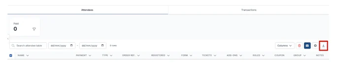

Creating a backup of your conference data
For event organisersNot an organiser?
If you would like to create a backup of all the data in your conference, follow the guidance below.#
For instructions on how to download reports, see Creating exports, reports and abstract books
The backup can be done in several stages. (All of the Oxford Abstracts tools have been included in the list below, so just choose the relevant for your event.)
Download the following:
1) All submission answers on ALL stages (including accordion rows).
2) All reviews on ALL stages
3) All decisions on ALL stages
4) The program as a Word document
See Downloading your program and session books
5) Program sessions
6) Program-related documents:
See Downloading your program and session books

7) Delegate Registration Data
Click on the Registration tab on the left-hand menu on your dashboard and select Registrations. Then click on the Download Arrow at the top right of the table to download your data.

8) Symposia data
9) Uploaded files in a sub-folder separated by stages
See Other reports - file uploads
10) Any abstract books
See Abstract books
11) Any other reports
See Other reports
Didn't solve it? Ask our support team
No question is too small, and there's no charge for asking. Raise a ticket and someone who knows the software will pick it up.
Did this page solve it?
Thanks — this helps us fix it.